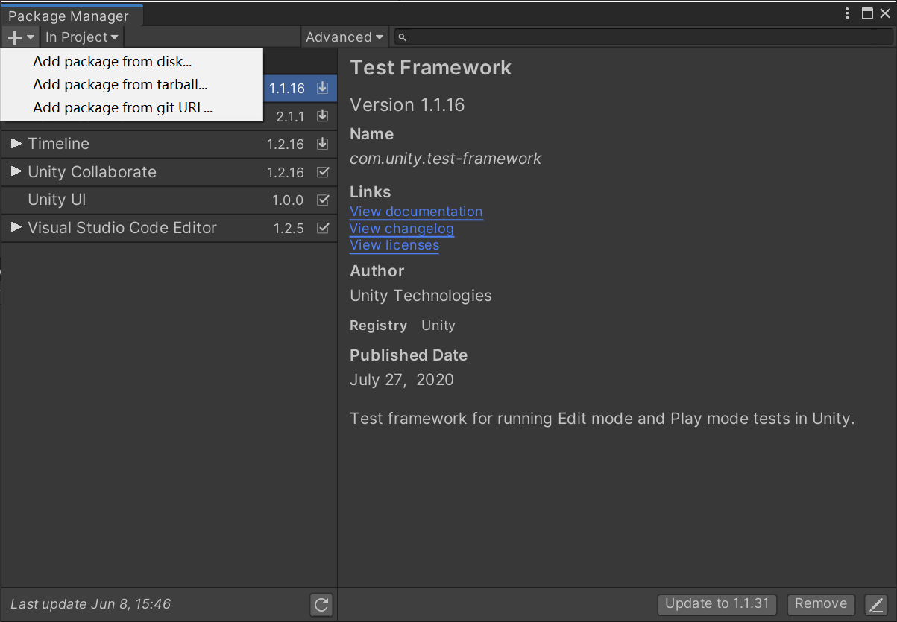
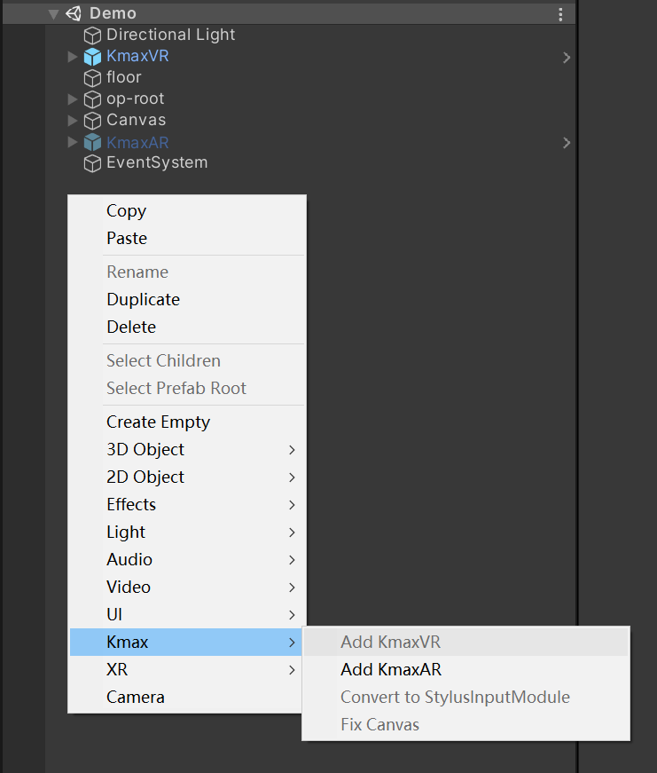

快速开始
导入SDK
你可以使用以下任意一种方式导入SDK
从github导入
- 打开目标unity工程
- 打开
package manager - 点击左上角
+，选择from git URL - 在弹出的输入框中输入
https://github.com/kmaxxr/com.kmax.xr.git并点击add按钮
 更详细的导入方式请参考unity手册
从本地磁盘导入
步骤1 克隆仓库(推荐) 或 下载压缩包
git clone https://github.com/kmaxxr/com.kmax.xr.git
步骤2 导入
- 打开目标unity工程
- 打开
package manager - 点击左上角
+，选择from disk - 选择刚才克隆的仓库中的
package.json文件
更新SDK
Warning
有时候SDK会更新，假如你的工程已经打开，那么你更新的时候可能会碰到一些问题
你可以先关闭相关工程，然后打开SDK所在目录，通过git拉取更新
git pull
Tip
SDK在工程打开时就已经加载，因此需要关闭工程将其卸载才能避免文件被占用
初始化工作
SDK提供了一些便捷的编辑功能方便开发者快速的启用SDK的相关功能
你也可以参照示例来使用
